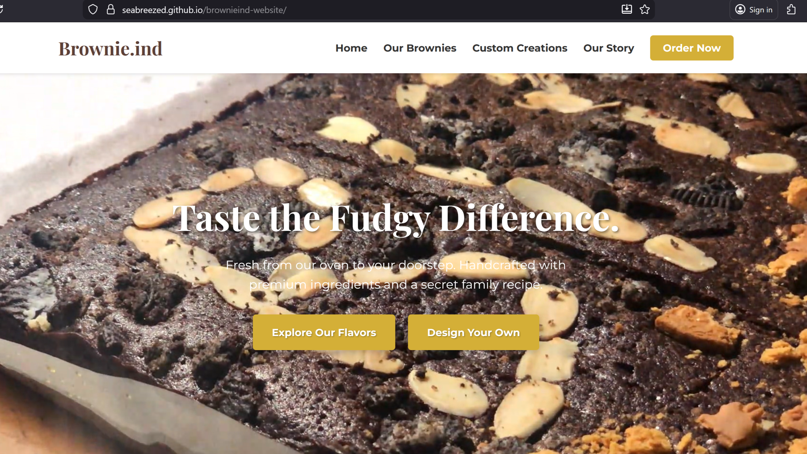
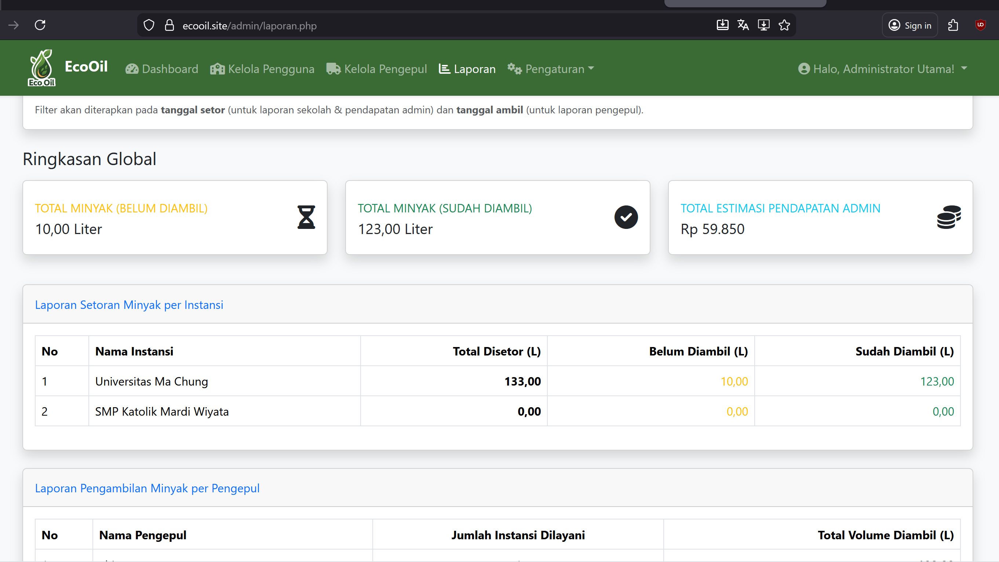
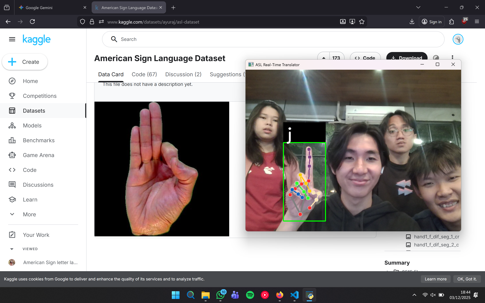
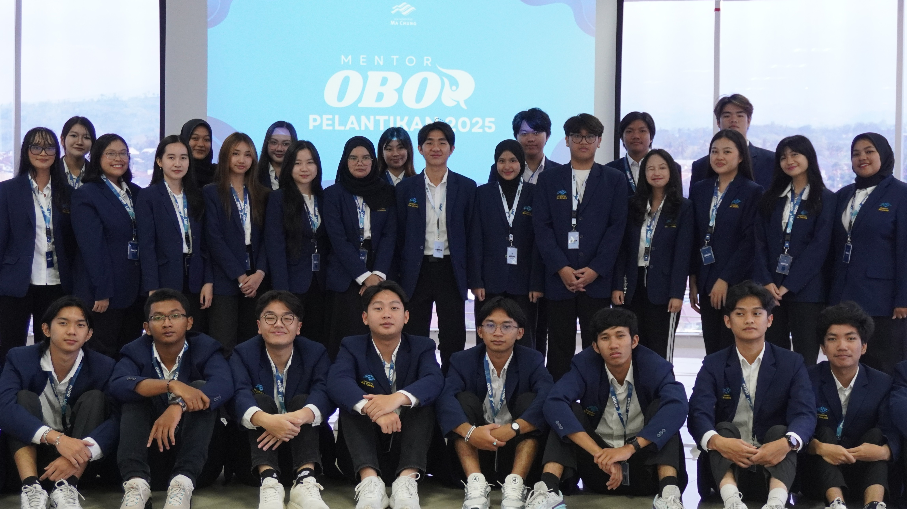
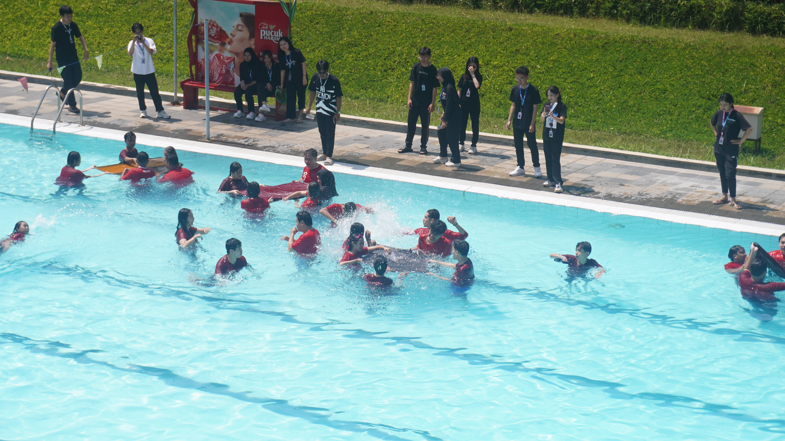
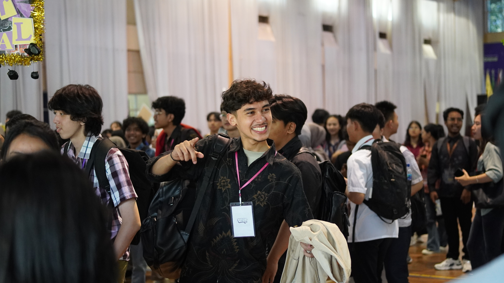

Halo, selamat datang! Saya mahasiswa IT.
Crafting Intelligent and Inclusive Digital Solutions
Menggabungkan ketajaman analitik data dengan desain antarmuka yang ramah pengguna untuk menciptakan teknologi yang berdampak nyata.

Halo, selamat datang! Saya mahasiswa IT.
Menggabungkan ketajaman analitik data dengan desain antarmuka yang ramah pengguna untuk menciptakan teknologi yang berdampak nyata.
Ketertarikan utama saya terletak pada eksplorasi dan analisis data. Saya sangat menikmati keseluruhan prosesnya—mulai dari pre-processing data mentah, mengevaluasi model, hingga menemukan insight yang berharga. Bagi saya, kendala di tengah proses analisis bukanlah hambatan, melainkan ruang untuk berpikir kritis dan memecahkan masalah.
Dalam perjalanan saya membangun karir sebagai Data Scientist/Analyst, saya juga memiliki hasrat yang kuat dalam pengembangan UI dan produk cipta guna. Saya menikmati proses merancang model AI yang bisa langsung diterapkan di dunia nyata, serta membangun antarmuka web yang interaktif.
Saya percaya teknologi bekerja paling baik ketika ia inklusif. Ke depannya, saya memiliki visi untuk mengintegrasikan analitik data dan robotika guna menciptakan teknologi tepat guna, khususnya bagi penyandang disabilitas.
Eksplorasi teknologi untuk solusi agrikultur dan komputasi cerdas.
Implementasi solusi dan dedikasi dalam berorganisasi.

Website profil interaktif untuk startup homemade brownie. Dirancang untuk memamerkan katalog produk dengan UI/UX menarik dan terintegrasi media sosial.
Lihat Website
Aplikasi go-green berbasis web yang menjembatani pengepul dan pemasok minyak jelantah untuk menyederhanakan alur transaksi agar lebih efisien.
Lihat Website
Model AI berbasis Computer Vision yang siap pakai untuk mendeteksi Bahasa Isyarat Amerika (ASL) secara real-time via kamera. Memiliki akurasi tinggi untuk integrasi aplikasi aksesibilitas.
Lihat Kinerja Model





Universitas Ma Chung | Program OBOR
Selama dua periode berturut-turut memandu mahasiswa baru dalam masa orientasi kampus. Mengembangkan kemampuan leadership, public speaking, dan kecerdasan sosial melalui pendampingan intensif. Di tahun kedua, saya naik tingkat menjadi fasilitator bagi para mentor baru, memastikan standar program orientasi berjalan lancar dan suportif.
Universitas Ma Chung | Fakultas Teknologi dan Desain
Berkesempatan untuk memfasilitasi dan mendampingi adik tingkat dalam kelas Pemrograman Berorientasi Objek secara mandiri. Mengelola kelas, memberikan asistensi teknis, dan menyesuaikan materi dengan silabus akademik secara fleksibel. Pengalaman ini mengasah kemampuan saya dalam komunikasi teknis dan memecahkan bug/error secara real-time.
Universitas Ma Chung | Unit Kegiatan Mahasiswa
Memegang tanggung jawab penuh atas manajemen arus kas dan stabilitas finansial UKM. Memastikan transparansi dalam setiap transaksi, menyusun laporan keuangan yang presisi, dan berkolaborasi aktif dengan pimpinan UKM serta lembaga kampus lainnya (BEMU & BPMU) untuk menyukseskan berbagai program kerja.